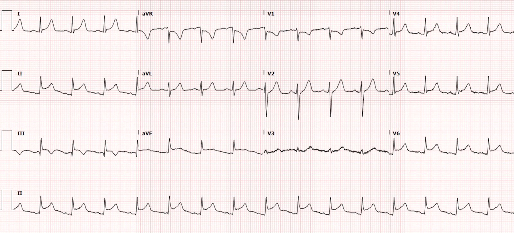
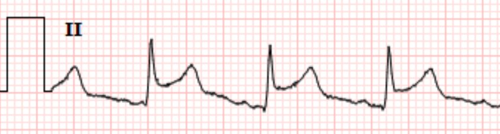
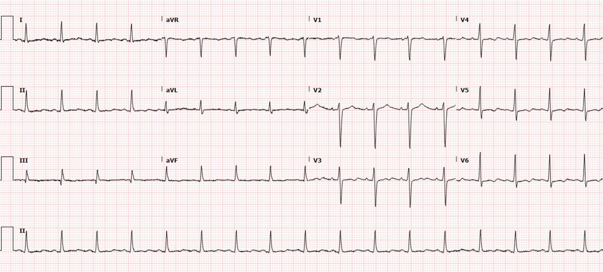
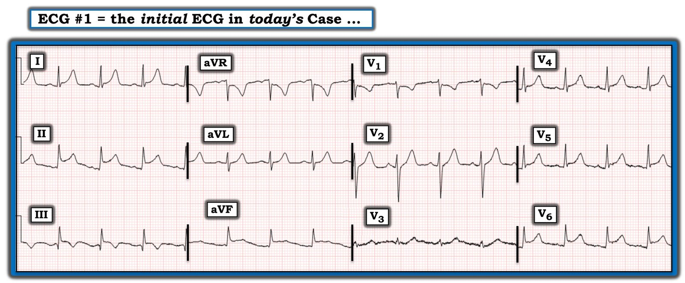
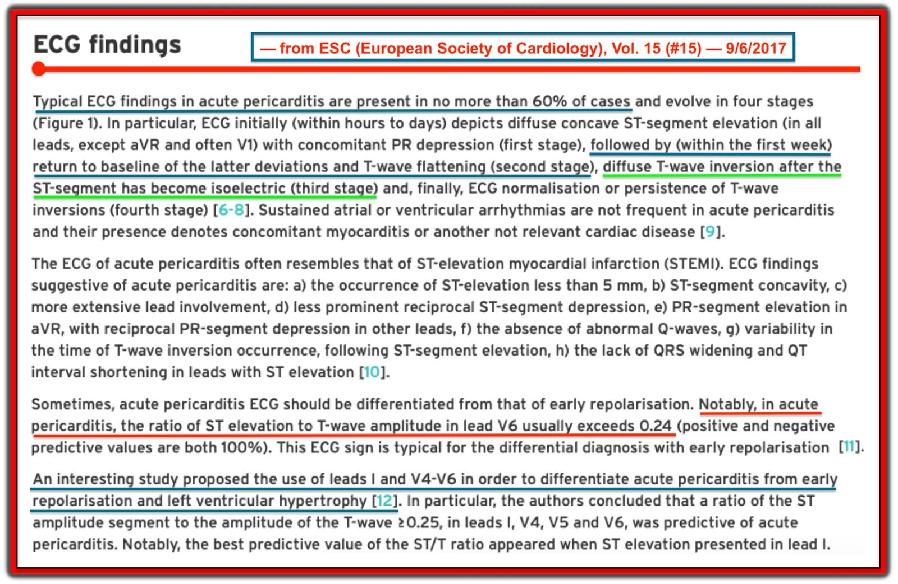
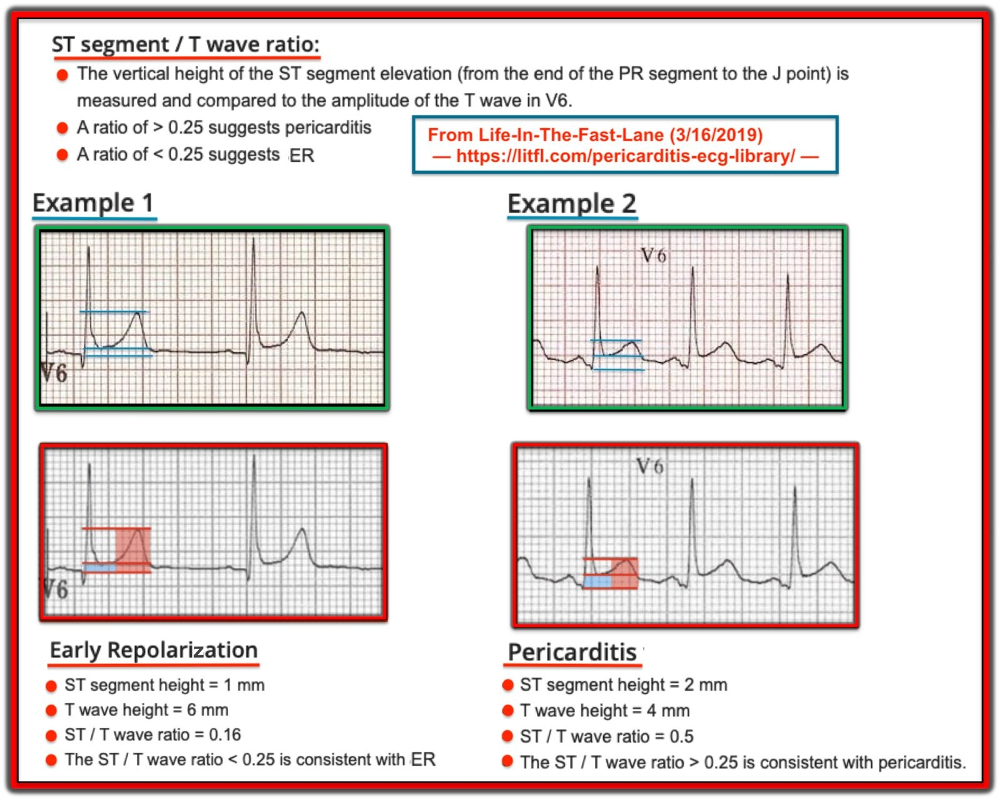

08/06/2022 — ST chênh lên sau vết thương do đạn bắn vào ngực
Bản dịch tiếng Việt của bài "ST elevation after gunshot to the chest" – Dr. Smith’s ECG Blog. Giữ nguyên toàn bộ 7 hình ảnh của bản gốc.
Bài do Bobby Nicholson MD gửi và viết, được Meyers, Grauer, McLaren và Smith bình duyệt
Một nam thanh niên bị nhiều vết thương do đạn bắn. Anh than khó thở tăng dần trên đường đến khoa cấp cứu và được cho thở oxy qua mặt nạ không thở lại. Khi khám ban đầu, anh có các vết thương thấu ngực trái, bụng co cứng và các vết thương nông ở hai chi dưới. Khám E-FAST cho thấy dấu trượt màng phổi hai bên, kèm tràn dịch màng ngoài tim lượng ít, không có bằng chứng chèn ép tim. Anh được đưa cấp cứu vào phòng mổ, tại đây được mở bụng thăm dò kèm mở cửa sổ màng ngoài tim đường dưới mũi ức, mở xương ức đường giữa và khâu sửa vết thương thấu tim ở mỏm thất trái, đồng thời sửa chữa nhiều tổn thương trong ổ bụng.
Dưới đây là một phần biên bản phẫu thuật của anh:
“Có một tổn thương cơ hoành vùng trung tâm bên trái đang chảy máu tiếp diễn, phù hợp với tràn máu màng ngoài tim đang tự giải áp. Đã mở cửa sổ màng ngoài tim đường dưới mũi ức, xác nhận tràn máu màng ngoài tim. Do đó đã mở xương ức đường giữa. Đã dẫn lưu hết máu trong khoang màng ngoài tim. Kiểm tra tim ghi nhận một vết thương thấu ở mỏm thất trái. Có đụng dập mức độ vừa xung quanh và đang chảy máu. Xét theo kiểu và vị trí tổn thương, đã khâu sửa thì đầu bằng chỉ. Tổng cộng đã đặt 2 mũi khâu đệm ngang có miếng đệm (pledget). Không thấy rõ tổn thương các mạch máu của tim.”
Vào ngày nằm viện thứ 1, ghi được điện tâm đồ sau:


Bạn nghĩ gì? Với kiểu tổn thương đã biết, những chẩn đoán nào cần có trong chẩn đoán phân biệt?
Có ST chênh lên rõ rệt ở nhiều chuyển đạo (V4-6, I, II, III, aVF) kèm ST chênh xuống (STD) soi gương ở aVR và V1. Một số chuyển đạo có kèm sóng T lớn, gợi ý sóng T tối cấp, trong khi những chuyển đạo khác như aVF lại có hình dạng khác biệt: ST chênh lên (STE) mà không có sóng T lớn (trong viêm màng ngoài tim, đôi khi chúng tôi bàn đến tỷ lệ ST / T, vì OMI kinh điển thường có sóng T lớn và ST chênh lên nhiều, còn viêm màng ngoài tim đôi khi có sóng T tương đối nhỏ so với mức ST chênh lên).
Với vết thương do đạn bắn vào tim đã biết, chẩn đoán phân biệt có thể gồm: tổn thương/tắc trực tiếp một động mạch vành thượng tâm mạc (chẳng hạn LAD) gây nhồi máu cơ tim (kể cả bóc tách do chấn thương), chấn thương mô trực tiếp gây dòng tổn thương biểu hiện bằng ST chênh lên, hoặc một dạng viêm cơ-màng ngoài tim nào đó do tổn thương gây ra, hoặc phối hợp nhiều nguyên nhân kể trên.
Trong phần lớn trường hợp, mỏm thất trái do LAD cấp máu, và OMI có liên quan đến mỏm đôi khi gây nhầm lẫn về các chuyển đạo điện tâm đồ tương ứng. Cái bẫy thường gặp nhất và quan trọng nhất là: tắc LAD lớn thường bao gồm nhồi máu cơ tim cấp vùng mỏm, có thể biểu hiện các dấu hiệu OMI trên điện tâm đồ ở các chuyển đạo “dưới” và/hoặc “bên” do mỏm tim nằm ở vị trí tương đối thấp và lệch sang bên. Cái bẫy là một số người thầy thuốc sẽ lầm tưởng hình ảnh này là ST chênh lên “lan tỏa”, khiến họ nghĩ nhiều hơn đến viêm màng ngoài tim, vì cách dạy điện tâm đồ kinh điển cho rằng ST chênh lên lan tỏa là dấu hiệu của viêm màng ngoài tim.
Đoạn TP dốc xuống được gọi là dấu hiệu Spodick, và rõ nhất ở chuyển đạo II.
Trong nghiên cứu này về dấu hiệu Spodick và các yếu tố tiềm năng khác giúp phân biệt OMI với viêm màng ngoài tim, dấu hiệu Spodick được ghi nhận (bởi một chuyên gia duy nhất, Bs. Mattu) ở 5% bệnh nhân “STEMI” và 29% bệnh nhân “viêm màng ngoài tim”.


Siêu âm tim qua thành ngực cho thấy LVEF 55-60% với tràn dịch màng ngoài tim không đáng kể. Không có bằng chứng chèn ép tim hay rối loạn vận động thành rõ rệt. Bệnh nhân được điều trị đau ngực bằng Toradol (có lẽ dùng NSAID để kháng viêm, nhắm vào viêm màng ngoài tim) và cho biết đau giảm đáng kể.
Bệnh nhân hoàn toàn không được thông tim hay chụp CT mạch vành.
Troponin hoàn toàn không được chỉ định.
Anh được điều trị nhiều tổn thương do chấn thương.
Điện tâm đồ sau đây được ghi sau 5 ngày và cho thấy các bất thường ST của bệnh nhân đã trở về bình thường.


Hai điện tâm đồ trên là hai bản ghi duy nhất được thực hiện trong suốt thời gian anh nằm viện.
Ngoài các tổn thương do chấn thương, cuối cùng bệnh nhân này được chẩn đoán viêm màng ngoài tim do chấn thương không biến chứng. Sau đó anh được xuất viện trong tình trạng ổn định. Hiện không có thông tin theo dõi nào về bệnh nhân này.
Những điểm cần học:
Bệnh nhân này có lẽ không bị tắc mạch vành cấp, nhưng các thăm dò đã thực hiện sẽ không đủ để phát hiện tắc mạch vành cấp nếu anh thực sự bị. Tuy vậy, các bác sĩ đã nhìn trực tiếp vùng cơ tim bị tổn thương, và điều này có thể cũng có độ chính xác cao trong việc loại trừ tắc mạch vành!
Chấn thương có thể gây tổn thương trực tiếp động mạch vành, dẫn đến tắc do huyết khối hoặc bóc tách, rồi từ đó gây OMI giống hệt mọi nguyên nhân tắc mạch vành cấp khác.
Cách duy nhất để loại trừ chắc chắn tắc mạch vành trong những ca như thế này là chụp mạch vành (có lẽ trong tương lai chụp CT mạch vành có thể hoàn hảo cho tình huống này). MRI là lựa chọn tốt nếu không gấp, như trong ca này.
Các thay đổi điện tâm đồ của cơ tim vùng mỏm có thể xuất hiện ở các chuyển đạo bên V5-6 và các chuyển đạo dưới II, III, aVF.
Bất cứ khi nào có một dấu hiệu ở nhiều chuyển đạo bên trái, dấu hiệu ngược lại phải có mặt ở chuyển đạo aVR.

===================================
Bình luận của KEN GRAUER, MD (8/6/2022):
===================================
Nam thanh niên trong ca hôm nay đã may mắn sống sót sau nhiều vết thương do đạn bắn — kể cả một vết thương thấu tim. Ngoài các tổn thương do chấn thương — anh được xuất viện với chẩn đoán viêm màng ngoài tim do chấn thương không biến chứng. Dù biết rằng hoàn cảnh của ca hôm nay rất khác với bối cảnh thường gặp khiến ta cân nhắc chẩn đoán viêm màng ngoài tim cấp — tôi vẫn cho rằng chủ đề Chẩn đoán bằng điện tâm đồ Viêm màng ngoài tim Cấp là một chủ đề xứng đáng để chúng ta định kỳ ôn tập.
- Tôi thấy khó tìm được y văn về các dấu hiệu điện tâm đồ đặc hiệu của viêm màng ngoài tim do chấn thương sau chấn thương tim xuyên thấu. Như Bs. Nicholson và Bs. Meyers đã đề cập trong phần bàn luận ở trên — bạn có thể thấy hầu như bất cứ điều gì trên điện tâm đồ, tùy theo bản chất cụ thể của tổn thương tim (tức là, có thể có tổn thương trực tiếp động mạch vành dẫn đến tắc cấp do huyết khối hoặc bóc tách — tràn dịch màng ngoài tim, có thể kèm chèn ép tim — tràn khí màng ngoài tim — tràn khí màng phổi kế cận, kể cả tràn khí màng phổi áp lực làm thay đổi tương quan giữa các cấu trúc giải phẫu — và/hoặc đụng dập tim với mức độ nặng khác nhau).
- Ngược lại — một tập hợp dấu hiệu điện tâm đồ đặc hiệu đã được mô tả cho viêm màng ngoài tim cấp không do chấn thương (Xem bên dưới). Để có cái nhìn tổng thể — dù là một trong những chẩn đoán được cân nhắc nhiều nhất trên các diễn đàn điện tâm đồ quốc tế — viêm màng ngoài tim cấp lại cực kỳ hiếm gặp trong thực hành lâm sàng.
- Như đã được nhấn mạnh nhiều lần trên Dr. Smith’s ECG Blog — viêm màng ngoài tim cấp ít gặp hơn nhiều so với nhồi máu cơ tim cấp hay biến thể tái cực ở những bệnh nhân đến khoa cấp cứu. Theo Bs. Smith, “Chẩn đoán viêm màng ngoài tim cấp là bạn tự chuốc lấy rủi ro!” Dù vậy — cũng nên nắm rõ các tiêu chuẩn điện tâm đồ cho chẩn đoán này là gì.
Điện tâm đồ Ban đầu trong Ca Hôm nay:
Cho rõ ràng — tôi đã đăng lại ở Hình 1 điện tâm đồ ban đầu trong ca hôm nay. Thuần túy từ góc độ giảng dạy — tôi thấy thú vị khi đánh giá điện tâm đồ ban đầu này để tìm các dấu hiệu phù hợp với chẩn đoán viêm màng ngoài tim cấp — cũng như các dấu hiệu chống lại chẩn đoán đó.


TRẢ LỜI:
- Các dấu hiệu điện tâm đồ ở Hình 1 phù hợp với viêm màng ngoài tim cấp gồm: i) ST chênh lên dốc lên ở nhiều chuyển đạo; ii) Dấu hiệu Spodick (rõ nhất ở chuyển đạo II — theo Bs. Nicholson và Bs. Meyers); và, iii) Tỷ lệ ST/sóng T ở chuyển đạo V6 >0,25 (trong khi tỷ lệ này có xu hướng thấp hơn mức đó ở các biến thể tái cực).
- Không giúp ích cho chẩn đoán ở Hình 1 là dấu hiệu đoạn PR chênh xuống — thấy ở một số chuyển đạo nhưng không thấy ở các chuyển đạo khác (tức là, có ở các chuyển đạo II, V4,5,6). Ngay cả khi PR chênh xuống lan tỏa hơn — độ đặc hiệu của dấu hiệu này đối với viêm màng ngoài tim cấp cũng chỉ ở mức khiêm tốn.
- Các dấu hiệu điện tâm đồ ở Hình 1 chống lại chẩn đoán viêm màng ngoài tim cấp gồm: i) Có sóng Q khá lớn kèm ST chênh lên và sóng T đảo ngược ở chuyển đạo III, giống hình ảnh nhồi máu cơ tim cấp (trong khi ở viêm màng ngoài tim cấp — không được thấy sóng Q — và sóng T đảo ngược thường không bắt đầu cho đến khi ST chênh lên đã hồi phục); và, ii) Không có ST chênh lên ở các chuyển đạo aVL, V2 và V3 (Đoạn ST thẳng đuỗn ở các chuyển đạo aVL và V3 đặc trưng cho bệnh mạch vành hơn nhiều so với viêm màng ngoài tim cấp).
Kết luận: Điện tâm đồ ở Hình 1 không điển hình cho viêm màng ngoài tim cấp không do chấn thương. Tuy nhiên, nó có thể phù hợp với viêm màng ngoài tim do chấn thương (vì các dấu hiệu điện tâm đồ rất thay đổi trong viêm màng ngoài tim do chấn thương).
- LƯU Ý: Đặc điểm điện tâm đồ của viêm cơ tim cấp có thể khác đáng kể so với viêm màng ngoài tim “đơn thuần”. Có thể có sự giống nhau giữa 2 bệnh cảnh này — nhưng độ lệch đoạn ST (chênh lên và chênh xuống) trong viêm cơ tim có thể không theo đúng diễn tiến thời gian như trong viêm màng ngoài tim. Ngoài ra, có thể xuất hiện sóng Q — vì vậy đôi khi khó phân biệt viêm cơ tim với nhồi máu trên điện tâm đồ.
=====================
Các dấu hiệu điện tâm đồ của Viêm màng ngoài tim Cấp:
Để ôn tập — tôi đã trích ở Hình 2 các đoạn liên quan từ một bài viết năm 2017 của ESC (Hội Tim mạch châu Âu) về chủ đề này của Xanthopoulos & Skoularigis (ESC: Vol. 15, No.15-9/6/2017).
- BẤM VÀO ĐÂY — để xem tệp PDF 9 trang trình bày “Quan điểm của tôi” về chẩn đoán viêm màng ngoài tim cấp bằng điện tâm đồ.


Trong số các điểm MẤU CHỐT về chẩn đoán viêm màng ngoài tim cấp bằng điện tâm đồ từ Hình 2 (có bổ sung thêm một số điểm của riêng tôi) — có những điểm sau:
- Các dấu hiệu điện tâm đồ điển hình của viêm màng ngoài tim cấp không phải lúc nào cũng có! Điện tâm đồ còn lâu mới là một công cụ chẩn đoán hoàn hảo.
- Có 4 Giai đoạn được mô tả trong diễn tiến các dấu hiệu điện tâm đồ của Viêm màng ngoài tim Cấp. Có thể tóm tắt như sau: i) Giai đoạn I — có ST chênh lên toàn thể ở hầu hết các chuyển đạo (có lẽ trừ các chuyển đạo “phía bên phải” = các chuyển đạo III, aVR và V1); ii) Giai đoạn II — ST chênh lên toàn thể này trở về đường nền (tức là, pha “giả bình thường hóa”); iii) Giai đoạn III — có sóng T đảo ngược lan tỏa; và, iv) Giai đoạn IV — toàn bộ bản ghi trở về bình thường.
- Trong 4 giai đoạn này — chỉ Giai đoạn I là dễ nhận ra là có thể do viêm màng ngoài tim cấp. Bạn sẽ không bao giờ đoán ra “viêm màng ngoài tim” nếu chỉ được xem một bản ghi đơn lẻ ở Giai đoạn II, III hoặc IV.
- Diễn tiến thời gian của 4 Giai đoạn điện tâm đồ này (ở những ca viêm màng ngoài tim có xuất hiện các giai đoạn đó) — rất thay đổi. Bản tóm tắt của ESC ở Hình 2 nêu rằng Giai đoạn I có thể kéo dài “từ vài giờ đến vài ngày” — trước khi tiến triển sang Giai đoạn II.
- Hình dạng của ST chênh lên thường là dạng lõm (concave-up) (tức là, hình “mặt cười”).
- Các dấu hiệu điện tâm đồ thường gắn với nhồi máu cơ tim cấp (tức là, sóng Q lớn hoặc rộng bất thường — ST chênh xuống soi gương) không có!
- ĐIỂM THEN CHỐT (PEARL): Trong viêm màng ngoài tim cấp, hình dạng ST-T ở chuyển đạo II có xu hướng giống ở chuyển đạo I. Ngược lại, trong nhồi máu cơ tim cấp — hình dạng ST-T ở chuyển đạo II giống chuyển đạo III (và không giống chuyển đạo I).
- Có thể có PR chênh xuống ở nhiều chuyển đạo — kèm PR chênh lên “soi gương” ở chuyển đạo aVR.
- TỶ LỆ giữa mức ST chênh lên và biên độ sóng T ở chuyển đạo V6 phải lớn hơn 0,25 (tức là, chiều cao ST chênh lên, đo từ cuối đoạn PR đến điểm J — phải lớn hơn 1/4 chiều cao sóng T ở chuyển đạo V6 — như minh họa bên dưới ở Hình 3).

